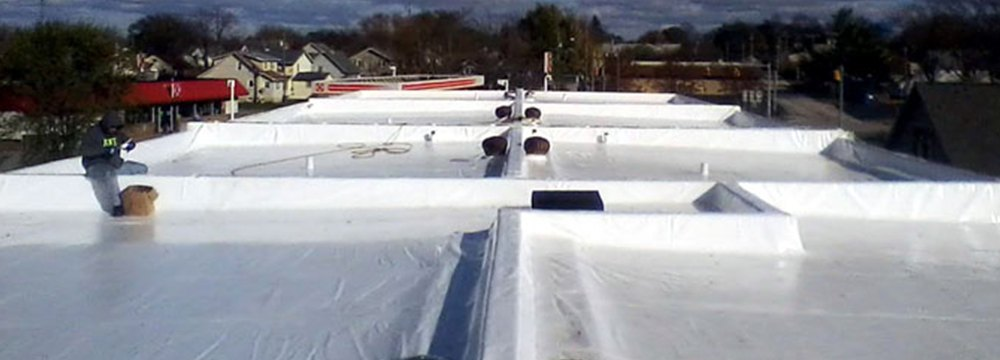
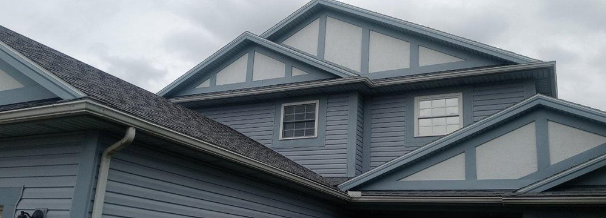
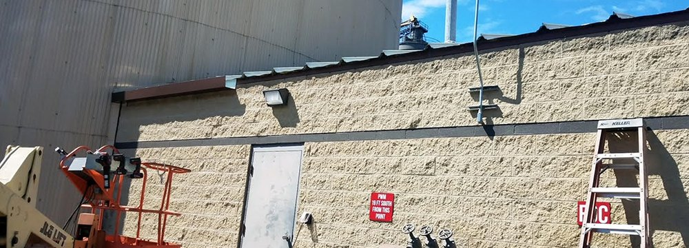
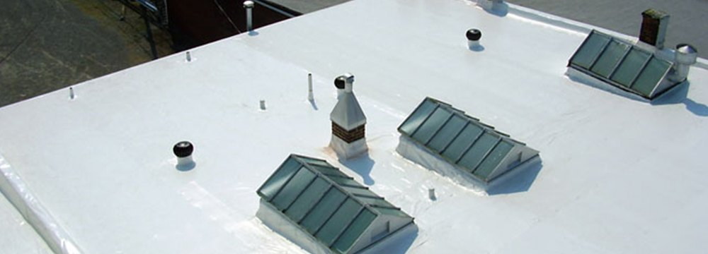
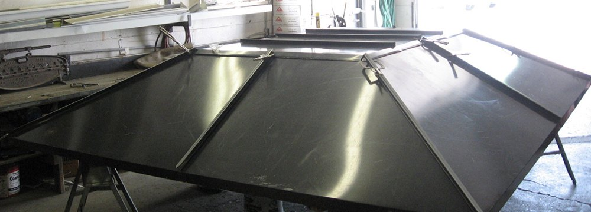
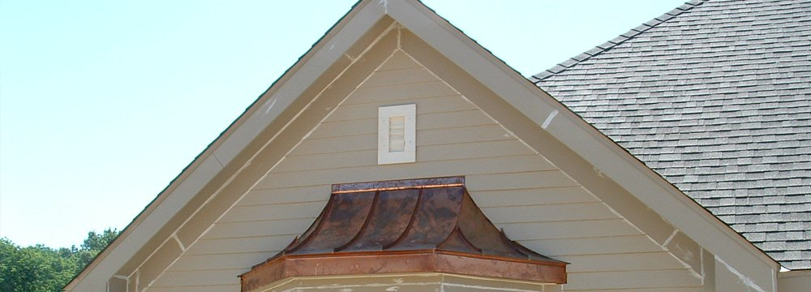

Roofing contractor in Findlay, OH · since 1950
A fourth-generation family company with in-house crews for Duro-Last flat roofing, Owens Corning shingles, repairs and custom sheet metal, plus plumbing, HVAC and electrical.
Flat roofs, shingle roofs and fabrication work from the Harold Shuck site.






Commercial, industrial and residential work across Findlay, Hancock County and Northwest Ohio.
Custom-prefabricated PVC membrane made to the exact size of your building, with heat-welded seams and curbs. It often goes over the existing roof without a tear-off, and carries a 15-year transferable warranty.
The Owens Corning Total Protection Roofing System: shingles and the layers under them working together to keep weather out and control temperature and humidity inside.
Patch repairs, gutter and downspout cleaning and inspections for any type of roof system. We've spent six decades solving leaky roofs.
UNIFLEX 300 commercial-grade aluminum coating over metal, smooth built-up and modified bitumen roofs.
Our own welding shop builds roof ladders, interior and exterior ductwork, bird fences, cupolas, custom gutters and downspouts. We enjoy a good challenge.
We continually score in the high 90's on Duro-Last roof inspections.
A no-obligation inspection includes an on-site survey, instrument checks where needed and written documentation with a recommendation.
Every job is done by our own employees, never subcontracted.
Cost effective solutions, quality work and great customer service.
Harold E. Shuck Inc. was founded in 1950, back when gasoline was twenty cents a gallon. Through four generations we've kept our grandfather's name at the forefront of our Northwest Ohio service area.
Our team of roofers, electricians, plumbers and HVAC technicians believes in clear communication, safety-first practices and doing the job right the first time.
Call the Findlay office for a free quote or to set up a no-obligation roof inspection.
Findlay, Hancock County and Northwest Ohio.